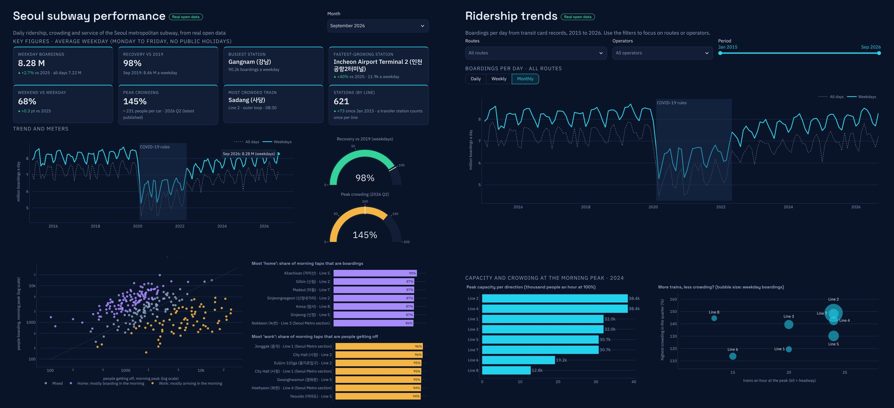

The question
Seoul has one of the busiest metro networks in the world, and it publishes a remarkable amount of open data about it: every tap of a transit card, summed by station and day, back to 2015. COVID-19 cut ridership by more than a quarter in 2020. I wanted to see, with the operator's own numbers, how far it has come back, where the network has grown, when and where the trains are fullest, and how much service is run to carry everyone.
The answer is a dashboard of seven pages that anyone can open, with a one-screen KPI overview for any month since 2015 and pages to explore behind each number. Every step, from the raw files to the summaries the app reads, is in Python notebooks that can be rerun.
The data
| What | Publisher | Period |
|---|---|---|
| Boardings and alightings by line, station and day (transit cards), about 2.5 million rows | Seoul Metropolitan Government | Jan 2015 to Sep 2026 |
| The same data through the Seoul Open API, for the latest months | Seoul Metropolitan Government | last 7 months |
| Boardings and alightings by station and hour, Lines 1 to 8 | Seoul Metro | 2024 |
| Crowding by station, direction and half hour, Lines 1 to 8 | Seoul Metro | 2023 Q4 to 2026 Q2 |
| Train operation by line: length, headways, trips, fleet | Seoul Metro | March 2024 |
| Official station names in English and other languages | Seoul Metro | 2026 |
The files come from Seoul Open Data Plaza and the Korean Public Data Portal (data.go.kr). Korean public holidays come from the Python package holidays, checked against the data.
Seven pages, one network
| Page | What it answers |
|---|---|
| Overview | How is the network doing this month? Seven KPI tiles, two meters and the trend since 2015, for any month |
| Ridership trends | How has ridership changed, by route and operator, on weekdays and weekends, day by day? |
| Stations | Which stations are busiest, which gained or lost riders since 2019, and which are new? |
| Time of day | When does the city travel, and which stations are homes and which are workplaces? |
| Crowding | Where and when are trains full, and how has the peak changed quarter by quarter? |
| Service | How many trains run, how hard each line works, and does more service mean less crowding? |
| About the data | Sources, definitions and every data problem found along the way |

What the data shows
Ridership is nearly back
Across all days, the network averaged 7.44 million boardings a day in 2019, fell to 5.38 million in 2020 and has climbed back every year since, to 7.13 million in 2026 so far. The dashboard measures recovery on weekdays against the same month in 2019, so that the season and the calendar do not distort the comparison.
Compare weekdays, not months
The difference is Chuseok. The three-day harvest holiday fell in late September in 2026 but in October in 2025, and the subway is almost empty on those days. A monthly average would report a fall that did not happen, so every headline figure uses the average weekday (Monday to Friday without public holidays), with the all-days figure shown beside it.
Growth came from new stations
Comparing whole lines makes extended lines look like winners: Line 5 shows +10% against 2019 and Line 8 +9%. Using only the stations open in both periods, they are at +2% and +1%, and most core lines are still below 2019 (Lines 1 and 2 about −8%, Line 4 −7%). The fastest growth is around new business districts and the airport: Magok (+131%), Magoknaru (+95%), Incheon Airport Terminal 2 (+91%) and Seongsu (+67%).
The city has homes and workplaces you can read from morning taps
At Kkachisan, 90% of morning taps are people boarding; at Jonggak and City Hall, 96% are people arriving. The evening peak at 18:00 is the busiest hour of the weekday (12% of all boardings). Weekends have no morning peak at all: travel builds up to a broad high at 16:00, and a weekend day carries about two thirds of a weekday.
The worst crowding has eased, and Line 8 is the surprise
100% means about 160 people in one car. In 2026 Q2, 338 of 21,411 weekday half-hour slots reached 100% or more. Comparing service with crowding gives the most interesting result:
| Line (2024) | Trains an hour at the peak | Cars | Capacity per direction | Highest crowding |
|---|---|---|---|---|
| Line 2 | 24 | 10 | 38,400 | 149% |
| Line 7 | 24 | 8 | 30,720 | 148% |
| Line 8 | 13 | 6 | 12,800 | 145% |
| Line 6 | 15 | 8 | 19,200 | 114% |
Line 8 carries far fewer people than Line 2, but with short 6-car trains every 4.5 minutes it has a third of Line 2's peak capacity and reaches the same level of crowding. Line 6, with a similar timetable but longer trains and lighter demand, stays the least crowded line.
Problems in the data, and how they were handled
- A broken month in the hourly data. Seoul Metro's hourly file reports the 13:00 hour about ten times too high on every day of April 2024, which made lunchtime look like a third peak. April is left out; without it, the hourly totals match the daily card data to within 0.5%.
- New lines take over taps. When a new line opens at a station (for example the Sillim Line at Boramae or the Seohae Line at Gimpo Airport), the card data books part of the station's passengers to the new line, and the old line seems to lose a third of its riders. Gainers and losers are therefore compared as whole stations whose lines did not change.
- Stations leave and join the data. The Bucheon and Incheon section of Line 7 left the card data between 2022 and 2024, which made Line 7 look 17% down on 2019; like-for-like, it is about 5% down.
- Three layouts for one crowding table. Quarterly files changed their line labels, time labels, sheets and spacing over time, 2024 Q3 was never published, and some rows carried an old station name or the wrong line. All are harmonised, and corrected from Seoul Metro's station codes.
- Messy downloads. Yearly files mix two text encodings, one has two rows glued together, number formats change between years, and stations were renamed (for example Danggogae became Buramsan). Every repair is done in the cleaning notebook, and renames are kept in an editable list.
- An API that forgets. The Seoul Open API only keeps about the last seven months, so the history comes from the published files and the API keeps the latest months up to date.
Limits
Card data counts boardings at the gates, not journeys or people: a passenger who changes lines inside a station is counted once. Hourly counts, crowding and operating figures cover Seoul Metro's Lines 1 to 8 only, and crowding is Seoul Metro's own estimate, averaged over the trains in each half hour. The operating table is a single snapshot from March 2024. English names for stations outside Seoul Metro are romanised automatically and may differ from the signs. The dashboard states these limits on the pages where they matter.
Where this could be useful
- Operators and planners: where longer or more frequent trains would relieve the worst crowding, as Line 8 shows, and how demand is shifting towards new districts.
- City and land-use planning: which neighbourhoods send people out in the morning and which receive them, from public data alone.
- Retail, property and events: station footfall by month and hour, growth since 2019, and the weekend hot spots that concerts and sports create.
The same approach, checked open data, like-for-like comparisons and a one-screen overview with pages behind it, works for any transit system that publishes ridership by station.
About
Lik Ren Tai applies data science in two fields: environmental science and railway systems. This is the third project in the series, after a case study of rail use in the Klang Valley and Klang Valley Reach and Risk, and the first built as an interactive dashboard. Built with Python, pandas, Plotly and Streamlit.
Data: Seoul Metropolitan Government and Seoul Metro, via Seoul Open Data Plaza and the Korean Public Data Portal (data.go.kr), free to use with credit to the source. Korean public holidays: the holidays package for Python. This is an independent project, not affiliated with or endorsed by Seoul Metro, KORAIL or the Seoul Metropolitan Government.